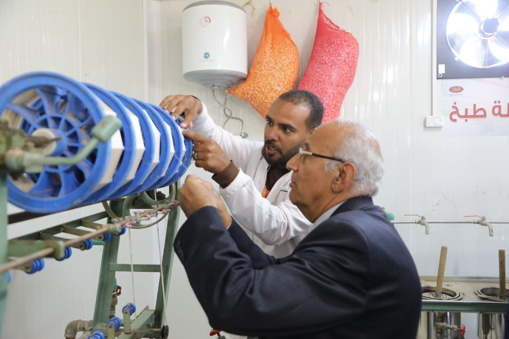
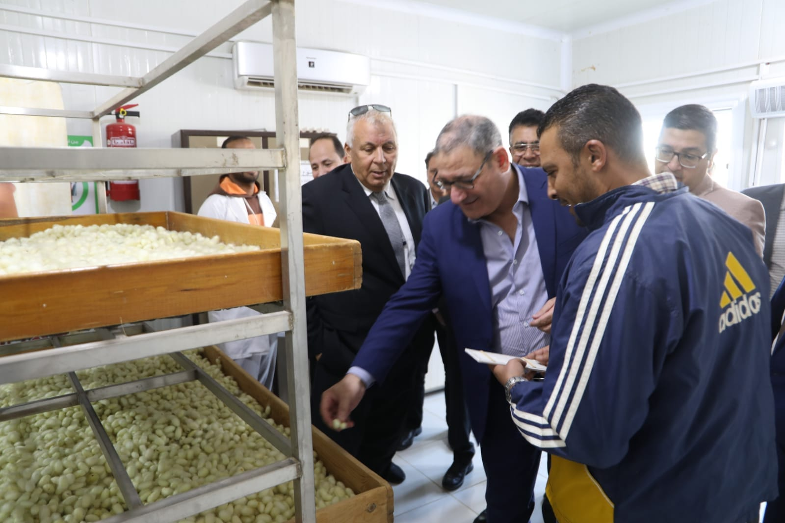
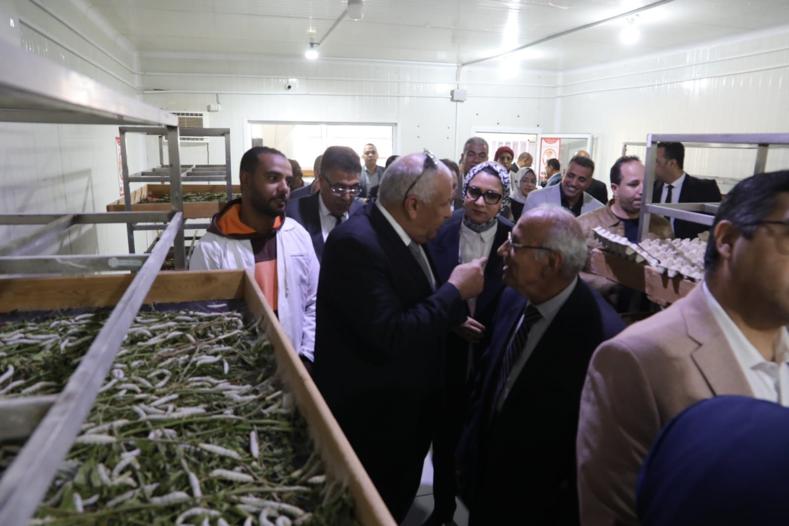

محتويات المشروع المقام على مساحة ١٨٠ فدان ويشمل الصوب الزراعية ( توت- خضروات- نخيل) ومعامل إنتاج الحرير وتربية دودة القز، بالإضافة إلى مزرعة نخيل وثلاجات حفظ التمور بطاقة استيعابية تصل ل ٢٠٠٠ طن ومشروع استزراع سمكي


